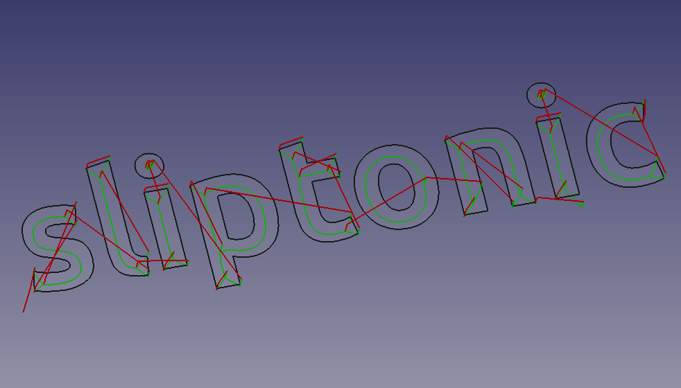
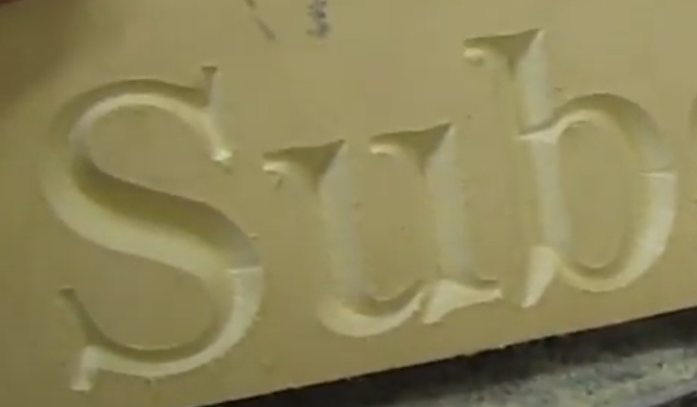
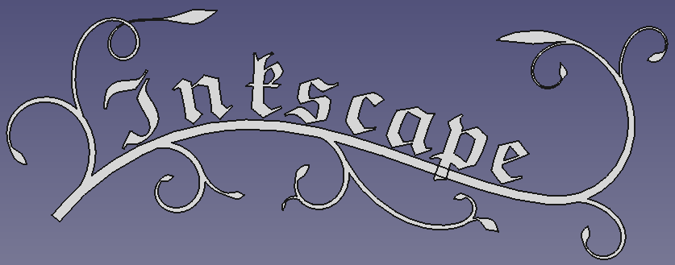

CAM: Wycięcie V
 CAM: Wycięcie V
CAM: Wycięcie V
- Menu location
-
- Workbenches
- Default shortcut
-
None
- Introduced in version
-
0.19
- See also
-
None
Opis
Narzędzie  Wycięcie V służy przede wszystkim do grawerowania w linii środkowej
Wycięcie V służy przede wszystkim do grawerowania w linii środkowej  Kształtu z tekstu na części. Jednakże, może być przydatne dla innych rodzajów operacji 2D.
Kształtu z tekstu na części. Jednakże, może być przydatne dla innych rodzajów operacji 2D.
W przeciwieństwie do grawerowania, które podąża za liniami w obrysie, Wycięcie V wykorzystuje frez w kształcie litery V i próbuje oczyścić obszar, przesuwając frez w dół środka obszaru i zmieniając głębokość cięcia. Ponieważ promień frezu w kształcie litery V zmienia się wraz z głębokością, zmienia się również szerokość cięcia. Rezultatem jest bardziej naturalnie wyglądające cięcie, szczególnie w przypadku czcionek szeryfowych.




Algorytm Wycięcie V oblicza ścieżkę wzdłuż linii środkowej regionu przy użyciu diagramu Woronoja. Ta linia środkowa jest ścieżką, którą narzędzie będzie podążać w płaszczyźnie XY. Następnie oblicza "maksymalny wpisany okrąg" wzdłuż ścieżki. Jest to największy okrąg, jaki można narysować w tym punkcie i pozostać całkowicie wewnątrz obszaru oczyszczania. Korzystając z promienia okręgu i kąta wierzchołkowego frezu, obliczana jest głębokość cięcia.
introduced in 26.3: Frezowanie może używać wirtualnego cofania po krawędziach. Jeśli następny punkt rozpoczęcia skrawania jest osiągalny przez już wyfrezowaną ścieżkę lub przez krawędź, która będzie frezowana jako następna, operacja może podążać tą krawędzią zamiast wykonywać wycofanie, szybki przejazd i zagłębianie narzędzia.
Użycie
Przygotowanie kształtów do grawerowania
-
 Kształt z tekstu są użyteczne od razu.
Kształt z tekstu są użyteczne od razu. -
Pliki SVG wymagają pewnego dopracowania, zarówno w edytorze, jak i w środowisku pracy
 Rysunek Roboczy:
Rysunek Roboczy:-
W edytorze (np. Inkscape): upewnij się, że plik zawiera tylko ścieżki i że ścieżki są niezgrupowane. Upewnij się, że nie ma przecinających się ścieżek, (w Inkscape) użyj Ścieżka → Uprość i połącz, aby połączyć ścieżki, które się nakładają.
-
Przełącz się na
Rysunek Roboczy w selektorze środowisk pracy. -
Zaimportuj SVG używając .
-
Wynik powinien wyglądać podobnie do tego:
::
-
Powyżej: Wyniki importu "SVG jako geometria"
::
;;
Ścieżki z dziurami (litery, winorośl na powyższym obrazku) są importowane jako dwie oddzielne ścieżki (nazwane zgodnie z Path905 i Path905001 w oknie Widoku drzewa), jedna z nich to dziura, a druga to kontur;. Zajmiemy się tym w następnym kroku
-
-
Aby uzyskać ściany 2D, Wycięcie V potrzebuje:
-
Dla ścieżek bez otworów:
-
Wybierz ścieżkę
-
Wybierz Modyfikacja
-
Następnie Modyfikacja
-
-
Dla ścieżek z dziurami:
-
Wybierz ścieżkę zewnętrzną, a następnie wewnętrzną
-
Wybierz Modyfikacja dwa razy
:: Niektóre ścieżki będą zachowywać się inaczej, więc może być konieczne pobawienie się
 Ulepsz kształt i
Ulepsz kształt i  Rozbij kształt, aż otrzymasz coś o nazwie:
Rozbij kształt, aż otrzymasz coś o nazwie: Face<numer>.
Wynik końcowy powinien wyglądać następująco:

-
-
-
Tworzenie operacji Wycięcie V
-
Przełącz się na środowisko pracy
 Część w selektorze środowisk pracy.
Część w selektorze środowisk pracy. -
Dodaj zadanie, użyj obiektów o nazwie
Face<numer>(lub Kształt z tekstu) jako podstawy, dodać kontroler narzędzia v-bit, ustawić posuwy, prędkości itp. -
Operacja obsługuje tylko jeden obiekt (albo pojedynczy obiekt ściany, albo Kształtu z tekstu), więc dla każdego obiektu:
-
Wybierz z menu głównego. Spowoduje to otwarcie panelu konfiguracji.
-
Otwórz zakładkę Geometria bazowa i dodaj wszystkie ściany Kształtu z tekstu lub ściany pojedynczego obiektu ściany uzyskanego powyżej
-
Naciśnij Zastosuj i sprawdź wygenerowaną ścieżkę; w razie potrzeby dostosuj parametry operacji (w większości sytuacji można ustawić wyższy próg).
-
Naciśnij OK, aby zakończyć
-
Właściwości
Dane
-
Umiejscowienie: -
-
Etykieta: -
-
WysokośćPrześwitu: -
-
GłębokośćKońcowa: -
-
WysokośćBezpieczna: -
-
GłębokośćStartowa: -
-
KrokWDół: -
-
OpGłębokośćKOńcowa: -
-
OpGłębokośćStartowa: -
-
OpZMaxPrzygotówki: -
-
OpZMinPrzygotówki: -
-
OpŚrednicaNarzędzia: -
-
Aktywna: -
-
Komentarz: -
-
TrybChłodzenia: -
-
WierzchołekStartowy: -
-
KontrolerNarzędzia: -
-
EtykietaUżytkownika: -